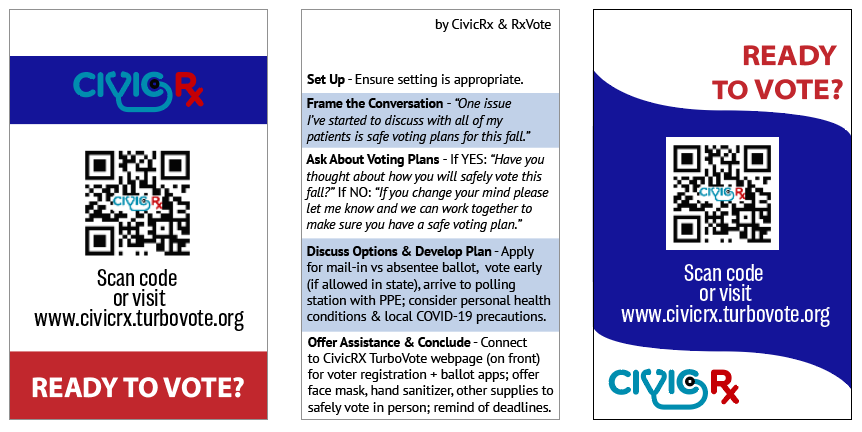
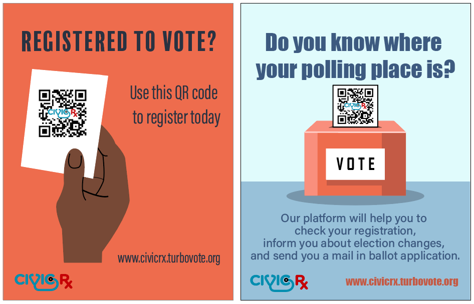
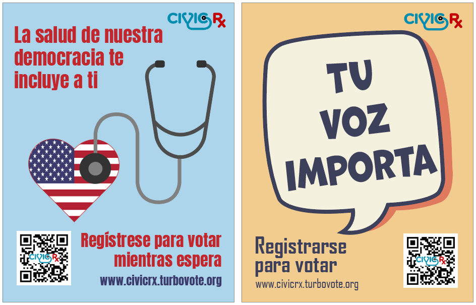

CivicRX
CivicRX is an initiative started by Dr. Sejal Hathi to increase voter turnout in the 2020 general election. Surprisingly, doctors have one of the lowest voter turnouts in the United States. Health policies in the US are increasingly profit-driven and public trust in medicine is ebbing. Physicians have not been vocal in representing their patients perspectives, and CivicRX is actively working to combat this. CivicRX and TurboVote have teamed together in efforts to increase voter turnout during a critical election that took place in the midst of a pandemic.
Badges
Worn by trainees at Massachusetts General Hospital (with conversation guidelines on the back).

Posters
Displayed around MGH to get out the vote.
 